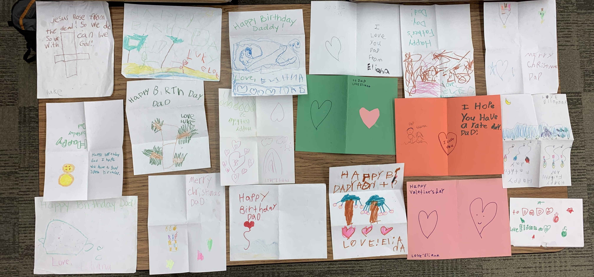
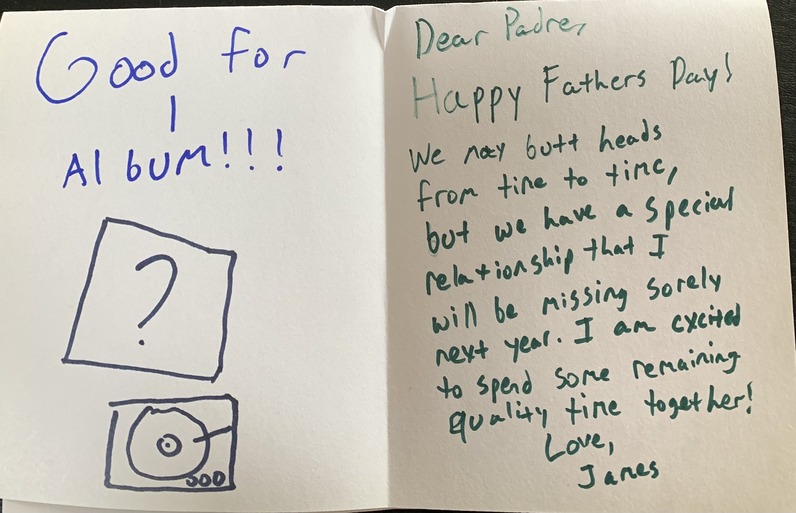
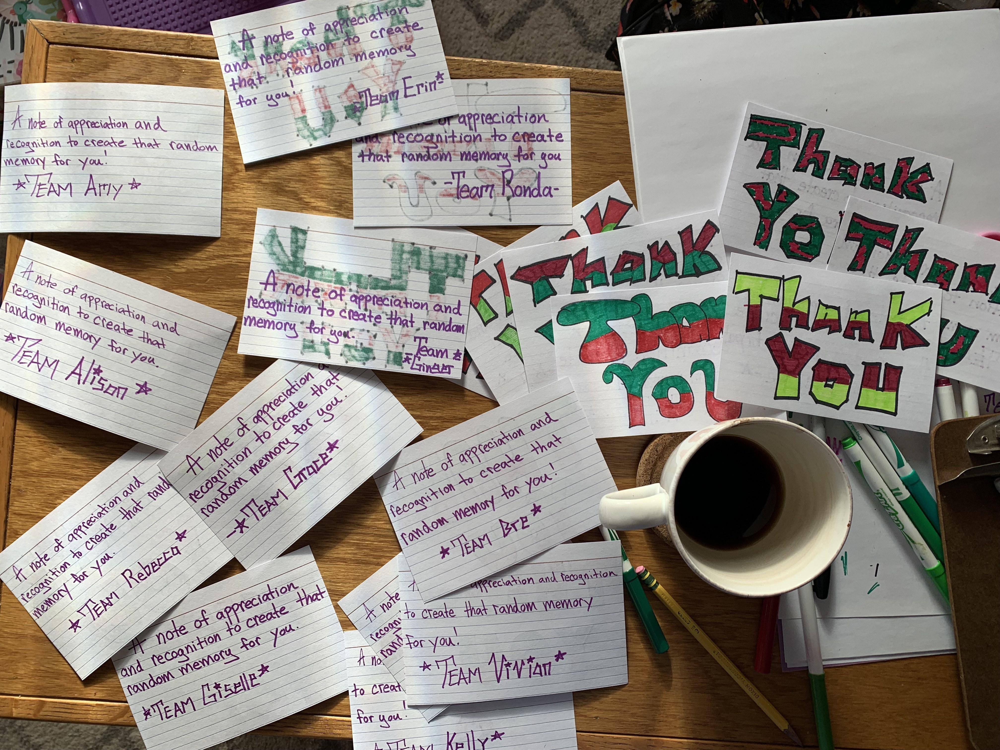

Architecture ofGrace
Private by design: no accounts, no tracking.
How do we learn to live with ourselves—
and one another—when none of us gets it right?
Free for your classroom. Nothing to sign up for. Educator Dashboard For Schools & Districts The Standards Crosswalk Family letters & consent
What your child learns at school, you can use at home. Our Child’s Plan Today was hard Conversation Starters SEL at home
Pick one thing. Take your time. Daily Drafts The Courses The Lab Bench Quiet Space


SEL · Social-Emotional Language


The Courses


The Lab Bench


Faith & Texts


Built by a practicing special educator — private by design: no accounts, no tracking.
Where it began
Before there was a framework, there was a table full of these.
For over a decade, my children have handed me cards. I kept every one. Laid out together, they are more than keepsakes. They are a record of children learning, year by year, to put their inner lives into words: a scribbled heart becomes a sentence; a sentence becomes a paragraph about gratitude, and grace, and growing up.
I did not build the Architecture of Grace from a theory. I built it from this table — from the slow, ordinary miracle of watching a child be witnessed, and write their way toward themselves.
Shared with my children’s blessing.
Why Architecture of Grace Exists
Built by a special educator — the thinking behind the framework, and the story of how it began.
The ecosystem at a glance — tap any doorway.
Why it exists
Identity, self-compassion, forgiveness, and grace — the architecture every relationship is built on.
People are often measured long before they are understood.
As a special educator, I spent years working alongside students, families, educators, and caregivers. I saw remarkable people carrying the weight of expectations, labels, mistakes, and the constant pressure to perform. Everyone seemed to be asking how they were doing. Far fewer were asking who they were becoming.
Architecture of Grace grew from a different belief.
Growth is strongest when it begins with identity rather than achievement, self-compassion rather than shame, forgiveness rather than judgment, and grace rather than performance.
The framework was created to help people reflect honestly, strengthen relationships, and engage in meaningful conversations about growth. It is not a behavior program, a diagnosis, or a scorecard. It is a practical way to better understand ourselves and one another.
Today, Architecture of Grace serves students, families, educators, caregivers, teams, and independent adults through reflection tools, conversation guides, and resources designed to foster understanding and connection.
The Self-Reflection is one expression of this work.
The mission is larger:
To create spaces where people are known before they are measured, understood before they are evaluated, and supported as they grow.
Because lasting growth begins not with performance, but with grace.
Before there was a framework, there was a table full of these.
For over a decade, my children have handed me cards — for birthdays, for Father’s Day, at Christmas, and for no reason at all. I kept every one. Laid out together, they are more than keepsakes. They are a record of children learning, year by year, to put their inner lives into words: a scribbled heart becomes a sentence; a sentence becomes a paragraph about gratitude, and grace, and growing up.
I did not build the Architecture of Grace from a theory. I built it from this table — from the slow, ordinary miracle of watching a child be witnessed, and write their way toward themselves.
Shared with my children’s blessing.


More than a decade apart in spirit: the table of cards, and the year a scribble grew into a letter about grace.
James Anthony Ramsden is the founder of Architecture of Grace, LLC. Before developing this framework, James worked in specialized educational settings — including Soaring Eagle Academy and the School of Expressive Arts and Learning — designing interventions for neurodivergent students and students with complex trauma. The Architecture of Grace framework translates these clinical, somatic, and expressive-arts-based practices into a universal format aligned to both CASEL and the Illinois SEL Standards, accessible for all K–12 classrooms. A native of Naperville (District 203) and a former educator in Indian Prairie (District 204), James is based in the western Chicago suburbs.
From the classroom — and the home
Built in two places at once: the classroom where I teach, and the home where I’m raising my own children.
My name is Jimmy Ramsden. I didn’t come to this work from a boardroom — I came to it from the classroom, where I still teach today as a special educator.
For more than a decade I’ve worked as an Illinois-certified special educator across elementary and junior-high classrooms — in self-contained, resource, and social-behavioral settings — and I hold a Learning Behavior Specialist endorsement for students from preschool through age twenty-two. Along the way I built and ran an elementary Social-Behavioral Learning resource program, where I coach students in the very skills this curriculum is built around: naming what they feel, steadying themselves, and trying again. The Architecture of Grace isn’t a departure from that classroom work — it’s two decades of it, gathered into something I can hand to other teachers. That work reaches well beyond the general classroom: I’ve taught in therapeutic day schools and a private behavioral day school serving students with severe and profound needs, and I’ve worked one-on-one in the home with the individuals others often find hardest to reach. Meeting a person exactly where they are — not where a lesson plan wishes they were — is where the heart of this framework was forged.
My journey started at Humboldt State University with a degree in political science. But the real catalyst came in 2006, when a serious car crash left me with a traumatic brain injury and a neurological disability. Rebuilding my life changed how I understand struggle, patience, and grace, and it’s what turned me toward special education and a master’s at Aurora University in Aurora, Illinois. It’s the reason this work isn’t abstract to me.
The Architecture of Grace grew out of a conviction that individuals deserve more than to be measured — they deserve to be understood. Built under Architecture of Grace, everything here rests on four core pillars:
- Identity — who a person comes to believe they are.
- Self-Compassion — how a person learns to speak to themselves.
- Forgiveness — moving past mistakes to make room for growth.
- Grace — meeting a person with understanding rather than only judgment.
As a teacher and a father, these are the values I want for my students, my own children — and for anyone willing to do this work.
— Jimmy Ramsden
The Self-Reflection is one practical expression of the Architecture of Grace framework.
Start the Self-ReflectionTwo ways to hold a human being
The same moment, read through two very different lenses.
Why Architecture of Grace stands apart
One result → one precise action
A student’s result doesn’t just sit in a dashboard. It maps directly to the exact lesson, chapter, or anchor chart they need next.
Understanding, not ranking
We don’t measure students to rank them. We help them — and their teachers — understand what they’re carrying, so real growth can begin.
Nothing leaves the device unless you choose
No accounts. No tracking. No vendor-hosted dashboards. Data stays local by default with optional, school-controlled Google Sheets sync only.
Designed in the classroom, not a boardroom
Created by a practicing special educator. Every feature was built to reduce teacher cognitive load — never add to it.
From a quiet moment to real growth
Not a test to pass — a path to walk.
- 1ReflectionA 6th-grader answers, “I keep replaying my mistakes long after they’re over.”
- 2AwarenessIt flags rumination & letting go — a gentle signal, never a label.
- 3ConversationIt opens a two-minute talk: “What’s one mistake you’re still carrying?”
- 4UnderstandingIt maps to Book 3 · Unit 2 · Lesson 6 — “Rewriting the Script,” the 6–8 lesson on the story the harsh voice keeps telling.
- 5GrowthAt the next self-reflection, that same question scores higher — and the loop begins again.
- 1ReflectionAn educator answers, “By the end of most days, I feel used up.”
- 2AwarenessIt flags low emotional regulation — a burnout signal, read privately.
- 3ConversationA quiet nudge: try a calm tool, and — you can’t pour from an empty cup.
- 4UnderstandingIt maps to the adult companion and the Co-Regulation reminder.
- 5GrowthA week later, the tank reads fuller — and the loop begins again.
- 1ReflectionA class of 24 takes the self-reflection on their own devices.
- 2AwarenessThe dashboard reads the group: average “worth a self-reflection,” lowest domain Emotional Regulation.
- 3ConversationThe teacher reads the room and picks one focus for the week.
- 4UnderstandingThe MTSS report maps it to Tier supports and Book 4 lessons.
- 5GrowthBy the next window, the class average rises a band — and the loop begins again.
The self-reflection is not an assessment. It is a conversation starter. It helps individuals and communities identify areas of strength and areas that may need attention, then provides opportunities for reflection and growth.
One framework at the center
School, home, and story don’t run on parallel tracks. They orbit the same shared language — and feed back into a child’s sense of who they are.
The product isn’t the curriculum. It’s a shared language.
When every adult uses the same words, a family can have one conversation without explaining the vocabulary first.
The curriculum isn’t the destination. It’s the connector.
Teacher curriculum
An educator teaches the framework.
Home conversations
A parent asks the same question at dinner.
Companion stories
A novel lets students live it through character.
Interactive tools
A private check-in uses the same language.
Student growth
The child internalizes it.
…and again
Next week the teacher builds on it.
Five movements. One journey.
One living ecosystem
A curriculum becomes an ecosystem when it can teach, measure what it taught, and act on what it learns. Tap any piece to go there.
For Educators
The classroom view of the framework: the Self-Reflection, the lesson-by-lesson curriculum, anchor charts, and conversation guides — with a private Guide & Library to explore everything before you teach it.
Inside a lesson
Every lesson ships as a small package — anchor charts, scenario cards, worksheets, and drawing activities. Open any sampler below; no code, no sign-up.
The Interior — Math, Science & Social Studies
Fifty-three activities a student can work on this screen or on paper — both count. Hints are part of the lesson and are never held against anyone, and nothing leaves the device except one thing: when an assignment is finished, its single summary row goes to the teacher's own connected Sheet — under the name the student typed once.
From one check-in to district insight
Aggregated trends — never individual scores — that point support where it’s needed most.
For Administration
For school and district leaders: aggregated, class- and school-level trends for MTSS — never individual scores — alongside licensing, privacy, and rollout details.
Open the District & Admin View → The Grace Ecosystem — strategic overview →The framework, brought home
Three small habits that turn the day’s hard moments into closeness. Tap any one to begin.
For Families
The framework, brought home: a private space to check in with your child, gentle conversation starters, and a kinder way to answer the inner critic together — no account, nothing saved, nothing shared.
Print the at-home guide →Regulation is contagious
So is depletion. Steady the adults first — it ripples out to the whole team.
For the Workplace
The same framework, voiced for the adults who hold everyone else — educators, nurses, leaders, caregivers. A private self-reflection and a 60-second burnout read, with team practices that need no extra meeting.

Built for every room
One shared language, on paper — each resource prints cleanly to Letter for the fridge, the classroom, or the staff room.
For Families & Schools
Grace at Home
A weekly family rhythm — prompts, activities, self-reflections, and challenges across all four pillars, plus a ready-to-use "This Week" card.
Home–School Connection
Shared vocabulary, a reflection loop, assessment follow-ups, growth tracking, and a family reflection journal.
For Grown-Ups
Grace for Parents
A self-development pathway for the grown-ups: identity, self-compassion, forgiveness, and grace in the hardest job there is.
Grace for Educators
Professional growth that protects the people who do the work: burnout prevention, repair, staff trust, and leadership through grace.
Grace for Adult Life
The framework beyond education — teams, leadership, couples, friendships, caregivers, communities, and personal growth.
Start Here
New to all this? Here’s what it is, in plain words — and where to begin.
Architecture of Grace is a K–12 curriculum built on four ideas — identity, self-compassion, forgiveness, and grace — with a private five-minute self-reflection as its front door, calming tools for the hard moments, practice pages for math, science, social studies and grammar, and a home side for families. It looks a little different depending on who you are, so pick the door that fits.
See how you’re really doing
A private, five-minute self-reflection — just for you. No grade, no right answers. See how you’re really doing, get one small thing that helps, and a quiet space whenever you need it.
Start the Self-Reflection →Here for class? Math · Science · Social Studies · English · Grammar · Word Study · Exam Prep
See the whole picture, safely
You get aggregated, class- and school-level trends for MTSS — never individual scores. Privacy lives in the link, and there’s no data harvesting. It’s universal, trauma-informed, and built by a practicing special educator.
Open the district view →Know your students sooner
One honest answer from a student points you straight to the right lesson, story, or conversation — and the dashboard reminds you to tend to yourself first. No student logins, no grading, no surveillance. Just a clearer, kinder read on your class. Special educators: the Student Check-ins door holds goals, data points, meeting briefs, and the student’s own page.
Open the Educator Dashboard →Help your child feel understood
It’s a 5-minute, private self-reflection that helps your child reflect on how they’re really doing — not a test, not a grade. They answer honestly, and it offers gentle conversation starters you can use together. Nothing is shared without you.
Go to Family →Start where you already work
Counselors, psychologists, social workers, SLPs, OTs, PTs, paraprofessionals, and behavior staff. Run the self-reflection with the students on your caseload, see what it turns up across tiers, and keep your notes on your own device.
Open the Specialist workspace →Bring it into your practice
Private practice, outside OT/PT/SLP, and community clinics partnering with a family or school. A consent-first, on-device workspace — track sessions and screeners, then hand off only what you choose.
Open the Specialist workspace →Use it in your community
Churches, ministries, faith-based schools, and youth groups. The tool stays fully universal by default; an optional Faith Companion adds values language you turn on — and off — right on your device.
Open the Faith Companion →Quick-Starts by role
Pick the role that fits and open its five-minute Quick-Start (PDF).
The Grace Ecosystem
One language for relationships —
practiced at home, in school, and across adult life.
Architecture of Grace is built on four pillars. The Grace Ecosystem carries them beyond the classroom — into the home, across the home–school bridge, and into the relationships adults hold for the rest of their lives. Every resource below is print-ready and built to be used in just 5–15 minutes.
One framework at the center.
School, home, and story don't run on parallel tracks. They orbit the same shared language — and feed back into a child's sense of who they are.
Learning shouldn't stop when the bell rings.
Most SEL programs teach for forty minutes a week.
Architecture of Grace was designed to influence the other 167 hours.
The curriculum isn't the destination. It's the connector.
Most programs end at the lesson. Ours keeps going — a continuous loop where every part hands the language to the next.
Teacher Curriculum
An educator teaches the framework — Mask vs. Mirror, rupture and repair.
Shared Framework
The same four pillars anchor every piece. No one translates between worlds.
Home Conversations
A parent asks the same question at dinner — with the exact words to use.
Companion Stories
A novel lets students live the framework through character.
Interactive Tools
A private check-in and reflection use the same language in the real moment.
Student Growth
The child internalizes it — and next week the teacher builds on it again.
The product isn't the curriculum. It's a shared language.
When every adult uses the same words, a family can have one conversation without explaining the vocabulary first.
Teachers don't reteach from scratch. Students don't translate between worlds.
Everyone already speaks the same language — and that language becomes the bridge.
Every adult in a child's life.
Not one audience — a whole circle of people, finally speaking to each other in the same words.
Different doors. Same house.
Each person gets tools shaped for their role — and every one points back to the same framework.
- Classroom Curriculum
- Lesson Plans & Anchor Charts
- Reflections & MTSS Insight
- Professional Development
- Home Edition
- Conversation Guides
- Family Activities
- Parent Resources
- Companion Novels
- Stories to Live Inside
- Private Reflection
- Interactive Tools
Five movements. One journey.
Not a shelf of separate products — parts of a single arc, each handing a child to the next.
Learn. Live. Grow.
Underneath the five movements run three engines — where a child learns the language, lives it daily, and grows into it.
Learn
- Classroom curriculum
- Teacher resources
- Reflections
- Professional development
Live
- Home Edition
- Conversation guides
- Family challenges
- Companion novels
Grow
- Interactive tools
- Private reflection
- The Grace Compass
- The four-pillar framework
Not "we have 28 lessons." Instead: every adult in a child's life begins speaking the same relational language.The Architecture of Grace Ecosystem — a district initiative, not a textbook
The resources
Every piece below is print-ready and built to be used in 5–15 minutes — the shared language, made practical.
For Families & Schools
Grace at Home
A weekly family rhythm — prompts, activities, self-reflections, and challenges across all four pillars, plus a ready-to-use "This Week" card.
Home–School Connection
Shared vocabulary, a reflection loop, assessment follow-ups, growth tracking, and a family reflection journal.
For Grown-Ups
Grace for Parents
A self-development pathway for the grown-ups: identity, self-compassion, forgiveness, and grace in the hardest job there is.
Grace for Educators
Professional growth that protects the people who do the work: burnout prevention, repair, staff trust, and leadership through grace.
Grace for Adult Life
The framework beyond education — teams, leadership, couples, friendships, caregivers, communities, and personal growth.
Words of Encouragement
A quiet place to rest when your heart is heavy. However you came here, you are welcome — and you are not alone.
…
A few things that are true about grief
🌊Grief comes in waves.
It can be calm one moment and crash over you the next. That's normal — you're not going backward.
💛It was not your fault.
Nothing you did or didn't do caused this. Guilt is part of grief, but it isn't the truth.
🤍There's no right way to grieve.
Crying, anger, numbness, even laughter — all of it belongs. Yours doesn't have to look like anyone else's.
🤝You don't have to do it alone.
Letting one person in — a friend, a counselor, a helpline — doesn't make the love any less. It just shares the weight.
If you're holding someone through this
Grief looks different at every age. A gentle starting point:
For parents
Use plain, honest words — “died,” not “lost” or “asleep.” Reassure them it wasn’t their fault. Keep routines steady, and let them see you grieve too.
For teachers
You don’t need the perfect lesson. Offer a calm, predictable room and a quiet place to step away. Don’t force anyone to talk; just let them know you’re there.
For young people
Whatever you’re feeling is okay — sad, angry, numb, or even fine for a while. There’s no wrong way to miss someone. Reach for one person you trust.
Write something of your own
If it helps, write a few words — to the person you’re missing, or to yourself. Or save a line above with “Save this one.” This stays only on your device. Nothing is sent anywhere.
Where to find more support
Trusted places that specialize in helping grieving children, families, and schools.
This page is a place of comfort, not clinical or medical care. Architecture of Grace is a guide for growth, not a diagnosis. If grief is making it hard for a child or adult to get through their days, please reach out to one of the resources above or a trusted professional.
Take a private 60-second read on your own tank, right here.
How full is your tank?
Burnout’s clearest signal is energy, not attitude. Four quick reads on your tank — private, instant, and saved nowhere. This isn’t a clinical burnout score; it’s a quick mirror. If it rings true, the full self-reflection goes deeper.
Something hard happening right now? Get one practical thing to do this minute.
For teachers
What To Say Instead
Five small changes in how you speak that help a student feel understood, not managed. The goal is connection, not obedience.
Instead of“Calm down.”
Try“Tell me what feels hardest right now.”
Instead of“You’re fine.”
Try“Something feels off. Tell me about it.”
Instead of“Go sit down.”
Try“Take a reset and come back when you’re ready.”
Instead of“You know better.”
Try“What happened, and what would help make it right?”
Instead of“Use your words.”
Try“We can start small. What’s one thing I should know?”
What’s happening right now?
Something just got hard? This isn’t about your week — it’s about right now. Four quick taps, and you’ll get one practical thing to do this minute. Private, instant, saved nowhere.
Who’s checking in?
This is a moment to be understood, not measured. The same four ideas — identity, self-compassion, forgiveness, and grace — the same care, just worded for who’s answering. Choose one to begin.
How are you doing, really?
Take a few quiet minutes for yourself. There are no wrong answers. If you’re doing this through school, your teacher will see your answers to understand and help you, never to grade you.
4 to 10 minutes · no wrong answers · private unless your school connects it
Before you begin. There are no right or wrong answers — just pick what feels most true for you lately, and go with your first instinct.
If a question brings up something you’d like to talk about, you can reach out to a teacher, counselor, parent, or guardian any time.
Some of these questions were shaped with the help of children — so the words would sound a little more like yours, and a little less like ours.
About you
Choose how you want to take it
- 18 items, single-tap response
- Score 0–54, flags who may need support
- Comparable across seasons of life
- Granular frequency (Never → Constantly)
- Intensity rating on 6 highest-signal items
- Three optional written reflections
- Score 0–90 with rich Home View report
For adults: how the two versions are scored
- Score 0–54, flags who may need support
- Comparable across seasons of life
- Granular frequency (Never → Constantly)
- Intensity rating on 6 highest-signal items
- Score 0–90 with rich Home View report
How are you doing, really?
A few quiet minutes, just for you. This is a self-reflection, not a test — and not a diagnosis. There are no wrong answers. It’s a way to notice how you’ve been, and a flag for a conversation if something needs one.
If you’re carrying something heavy right now, you don’t have to carry it alone. In the U.S. you can call or text 988 (the Suicide & Crisis Lifeline), any time, day or night. Reaching out is a strong thing to do.
Before you begin. Just pick what feels most true for you lately, and go with your first instinct.
Your responses aren’t anonymous — they go to the person or team who shared this with you, so someone can follow up with care. If something here brings up a lot, please reach out to someone you trust.
About you
Choose how you want to take it
You can’t co-regulate from an empty cup.
Every helping role runs on the same quiet machinery: a teacher steadying a child who’s come undone, a nurse calming a frightened patient, a manager holding a team through a brutal quarter. None of it works when the person doing the steadying is running on fumes. You cannot help someone else find their footing while you’re losing your own — and this is the part most workplace-wellness programs skip entirely: tending to the helper first.
Regulation is contagious. So is depletion. We start with you.
Voluntary adult self-reflections available for staff wellness — no evaluation or surveillance.
Anyone whose job is holding others
The work is whole-person, not job-specific — because regulation doesn’t clock out. If people lean on you, this is for you.
The same self-reflection — voiced for the adult in the room
Eighteen honest items across three areas: steadying yourself, how you speak to yourself, and showing up for the people around you. Take it quick (~4 minutes) or thorough (~10 minutes). It rests on the four ideas the whole framework is built on.
This is a mirror, not a report.
Honesty only works when it’s safe — so we made it safe. There is no version of this where your manager, HR, or anyone else sees what you said. It’s yours.
- Your answers never leave this device — nothing is transmitted, anywhere.
- No login, no account, no email required to begin.
- No manager and no HR dashboard ever sees a single response.
- Take it as often as you like — it’s a self-reflection, not an exam.
Pick what feels most true for you lately, and go with your first instinct. When you finish, you get a private report and a few gentle conversation starters — for you alone.
Choose how you want to take it
If you’re carrying something heavy right now, you don’t have to carry it alone. In the U.S. you can call or text 988 (the Suicide & Crisis Lifeline), any time, day or night. Reaching out is a strong thing to do.
Care for the team, without surveilling it
Organizations don’t buy access to anyone’s answers — those stay private, always. What you bring your people is the program and the practice: a shared language for steadying yourself so you can show up for the people you serve. On day one, leadership sees participation, never scores. Real outcome data — anonymized and consent-based — can come later.
Talk to us about your team →Thank you.
Your answers have been saved. A trusted adult will review them to make sure you have the support you need.
Name something true about yourself.
Before you go, tap one or two positive words that describe you today.
—
Carry that word with you today.
How you’re doing
Here’s everything you just shared — and where each piece lives in the books. This is a mirror, not a verdict — a way to be understood, not measured.
This is your personal report. If you checked in on a class computer or through a link your teacher shared, your teacher can see it too — to understand and support you, never to grade you.
Your path from here
A self-reflection is a beginning, not an ending. Here’s where to go next.
- Check in
- See resultsYou’re here
- Explore resources
- Apply it
- Keep growing
Explore your resources
See the lessons, charts, and novel chapters that match what you just shared.
Put the framework to work
The full K–12 curriculum and the six-book novel series bring this into a classroom or home.
Keep growing
Check in again over time, or use Family Mode to track it together.
What helps me
Tap what helps you feel steady. We’ll keep it on this device and bring it back next time you check in.
A score is a flag for a conversation, never a diagnosis — never a verdict on who you are. It’s a starting point for being understood. Because growth begins with grace, not performance.
Bring the language home.
The same ideas your child learns at school can be part of home life: at dinner, in the car, after a hard day, or while making up after a fight. Start with one small conversation.
🔒 Private by design — your family’s reflections stay on this device unless you intentionally choose to share something.
If your child’s school uses Architecture of Grace, your child may do a short check-in or self-reflection there. It’s a private way to say how they’re doing, never a test or a grade. Their answers stay with the school. What your family does here stays here. The words are the same in both places, so hard moments at home and at school can be talked about the same way.
Your family’s home base
Add each family member once. You’ll get conversation starters for their age, a private repair journal and gentle routines. Everything stays on this device for you to look back on.
Educator Dashboard
How the dashboard works
This is your teacher view — class trends and each student’s report. When someone finishes a self-reflection, they see their own personal report right away, and it comes to you here when it’s on a class computer or your shared link. Here’s the whole flow at a glance — a self-reflection, not an exam.
-
1
Hand it outOpen Distribute to create a link or QR code for your class. Students open it on their own device — no logins to set up.
-
2
They check in privatelyEach student answers their own self-reflection. Their results sync back only through the link or QR code you shared — nothing else travels with it.
-
3
Read the groupOverview sums up the whole group; Class trends shows which areas to focus on next. Use these to plan your teaching, not to grade.
-
4
Open the conversationGo to Student view to read any student’s full self-reflection — their answers, their words, and conversation starters. Use Open report or Export PDF for one student at a time.
New here? How to read this dashboard
Each student’s report shows three areas, color-coded so you can see at a glance where to focus:
- Green — Keep noticing. Keep affirming what’s working.
- Amber — Worth a conversation. A good moment for a gentle conversation.
- Red — Adult follow-up. Sit with them; the Resource Index maps the next lesson, story, or tool.
A score is a flag for a conversation — never a diagnosis, and never a verdict on who a student is. New to introducing this? Tap “How to introduce this (60 sec)” above for the word-for-word script.
Self-Reflection
The deeper look — eighteen questions, two or three times a year. The daily check-in is this morning and the exit slip is this afternoon; this is the one that fills the dashboard’s bands and each student’s report.
Results land on the Overview, in Students, and in Trends. The link itself lives under Set up ▸ Distribute — one link builder, not two.
Alignment & Crosswalks
How everyone’s doing
Domain averages
Class trends
Individual responses
Student reports
Family & adult reports
Growth across windows
Multi-year trajectory
Grace Goal Builder
Classroom Link Generator
One more, for districts running several schools
Connect your Sheet
This is the one technical step, and it is done once per school — usually by whoever set up the Sheet, often IT. You need one link from it. If you do not have that link yet, open “How to create your Apps Script Web App” below — it is six steps and a file to paste. You can also skip this entirely: without it every answer simply stays on the device it was taken on, which is a real way to run the whole year.
How to create your Apps Script Web App
- In your Google Sheet, open Extensions → Apps Script.
- Delete any sample code and paste in AoG-Screener-Sync-Code.gs.
- Open Project Settings (gear) → Script properties and add both secrets:
BACKEND_AUTH_KEY— lets devices send results in — andADMIN_PULL_KEY— lets this dashboard read them back. Add them in one go. Apps Script’s Save replaces the entire property set with whatever rows are on screen, so saving one on its own deletes the other. - Deploy → New deployment → Web app. Set Execute as: Me and Who has access: Anyone, then Deploy and authorize.
- Copy the Web app URL (it ends in
/exec) and paste it above with yourADMIN_PULL_KEY— then Save and Test. - One more, for student devices. What you just saved lives in this browser only. A Chromebook or phone opening a classroom link has never typed it in, so send the
/execURL and theBACKEND_AUTH_KEYto whoever maintains this site — they go inaog-sync-config.js, and student results start landing in your Sheet.
Everything stays inside your district’s Google Workspace — no data ever touches Architecture of Grace servers.
Setting this up from an iPad or iPhone
- Use Safari, not the Google Sheets app. The door you need — Extensions → Apps Script — only exists in the desktop Sheets editor. An iPad gets it automatically at docs.google.com; on an iPhone tap the aA button in the address bar and choose Request Desktop Website first.
- Open the script from inside the Sheet. A project started at script.google.com on its own is attached to nothing and can never work — it must be born from Extensions → Apps Script so it knows which Sheet it lives in. A blank Sheet is fine: the script creates every tab and header itself.
- Invent both keys before you start — 15+ characters each, only letters, numbers and dashes, and different from each other. Write them down, then copy-paste them everywhere they go; a single retyped character fails silently.
- The two boxes above are easy to swap on a small screen. Passcode holds
ADMIN_PULL_KEY; Write key holdsBACKEND_AUTH_KEY. If Test says writing works, but that passcode was refused for reading, the two values are sitting in each other’s boxes — swap them and test again. - Then every link you make on this device carries this Sheet’s address. A phone that opens one of your links posts straight here — that is the whole point of setting a device up with its own Sheet.
Stored only in this browser — never sent to Architecture of Grace. Use the one-page setup guide (Code.gs) to create the Sheet and script in about five minutes.
Syncing & distribution
Affects only this device. Students who open a generated link sync regardless of this setting.
See results from other devices
Daily log
The Build · IEP progress monitor
Your data on this device
Read live from this browser. Nothing here is sent anywhere — download a backup first, then delete if you need to.
Class-summary exports
Where your data lives
Responses are saved privately in this browser for this session only, on this computer. The exports above are class-level summaries — they never include student names, individual scores, or written responses.
Architecture of Grace
How Architecture of Grace works
Architecture of Grace is not a curriculum, an assessment, and a library sitting side by side — it is one connected framework. The clearest way to see that is to follow a single honest answer all the way from a quiet self-reflection to real growth.
Whether you are a family at the kitchen table, an educator in one classroom, an administrator, or a district leader — the path below is the same. Only the scale changes.
How Architecture of Grace is different
Not a knock on other tools — just where this one stands apart from most SEL programs.
What Is Architecture of Grace?
In plain terms — it’s a developmental, universal K–12 curriculum with a private, bilingual self-reflection as its front door. It brings together honest self-reflection, a universal check-in, conversation starters, companion novels, and a K–adult resource library into one connected system — for students, adults, and families alike.
Architecture of Grace is a human-development framework and an intuitive digital self-reflection that helps people understand themselves, strengthen relationships, and navigate life’s challenges with resilience, responsibility, and hope. It’s a self-reflection, not an exam.
The self-reflection runs two ways — a quick rapid mode, or a fuller depth mode with intensity follow-ups and written reflections — and ends with a personal, per-person Home View report. Everything is bilingual, in English and Spanish, and MTSS-ready, surfacing gentle flags rather than diagnoses.
Around the self-reflection sits a wider ecosystem: conversation starters, companion novels, and a K–adult resource library that connects each result to a practical next step — bridging deep personal development and daily practice.
The founder, and the why beneath the work
My name is Jimmy Ramsden. I didn’t come to this work from a boardroom — I came to it from the classroom, where I still teach today as a special educator.
For more than a decade I’ve worked as an Illinois-certified special educator across elementary and junior-high classrooms — in self-contained, resource, and social-behavioral settings — and I hold a Learning Behavior Specialist endorsement for students from preschool through age twenty-two. Along the way I built and ran an elementary Social-Behavioral Learning resource program, where I coach students in the very skills this curriculum is built around: naming what they feel, steadying themselves, and trying again. The Architecture of Grace isn’t a departure from that classroom work — it’s two decades of it, gathered into something I can hand to other teachers. That work reaches well beyond the general classroom: I’ve taught in therapeutic day schools and a private behavioral day school serving students with severe and profound needs, and I’ve worked one-on-one in the home with the individuals others often find hardest to reach. Meeting a person exactly where they are — not where a lesson plan wishes they were — is where the heart of this framework was forged.
My journey started at Humboldt State University with a degree in political science. But the real catalyst came in 2006, when a serious car crash left me with a traumatic brain injury and a neurological disability. Rebuilding my life changed how I understand struggle, patience, and grace, and it’s what turned me toward special education and a master’s at Aurora University in Aurora, Illinois. It’s the reason this work isn’t abstract to me.
The Architecture of Grace grew out of a conviction that individuals deserve more than to be measured — they deserve to be understood. Built under Architecture of Grace, everything here rests on four core pillars:
As a teacher and a father, these are the values I want for my students, my own children — and for anyone willing to do this work.
This work is in its early stages. The self-reflection is a pilot — a score is a flag for a conversation, never a diagnosis — and the curriculum is a framework I’m actively proving. I’d rather be honest about that than oversell it.
If you’d like to try it or share your thoughts, please reach out. Theopus77@yahoo.com
— Jimmy Ramsden
Everything behind the framework
Everything you would want to read before you teach it — and the index that turns a single answer into the exact lesson that answers it.
The honest frame. The self-reflection is built from a coherent framework, which makes it internally sound — but it has not yet been through external reliability and validity testing. For a pilot, that is appropriate and disclosed. Until then, every score is a flag, not a diagnosis — and the curriculum, not the number, is the intervention.
How the full library works
One result becomes one targeted next step — and then a sustained one. This is the loop that ties measuring, flagging, and teaching into a single system.
A self-reflection surfaces a low domain — say, Self-Compassion & Growth Mindset — for one student or a whole group.
The result raises a flag on the counselor follow-up view — who to sit with, and where to focus — without ever issuing a diagnosis.
The Resource Index maps that flag straight to the book, chapter, lesson, and anchor chart that teach the skill — so the score leads to instruction.
People are often measured before they are understood. Architecture of Grace offers another way — and everything that follows serves one belief: that growth begins with grace, not performance.
How a self-reflection becomes support
Every piece hands off to the next — a self-reflection becomes a conversation, and a conversation becomes the right support.
That’s the path in a school. On their own, an adult takes the very same self-reflection privately — the personal report and conversation starters are theirs alone. This is for every age, not only the classroom.
Five ways in, one framework
The same eighteen items and the same care, worded for whoever is answering. Each path is already built into this file — choose the door that fits.
What this platform includes
Every piece below is built into this one file or its library — not a roadmap, but what ships today.
If you lead a building or a district, here is the operational picture — reflection, support tiers, and follow-through in one tool you host yourself.
Leadership sees only aggregate trends — never individual student responses.
Low-effort rollout: Start with one class or grade band. Scale across buildings using shared links and your own Google Sheets.
District scale: License available via purchase order for multi-building use.
SEL coordinators can use demo data to train staff quickly before going live with real students.
Privacy & legal documents
Everything your IT, privacy, and legal teams need to evaluate the self-reflection — written in plain language for busy administrators. All are PDFs you can download, share, and review.
Data Privacy Agreement (DPA)
A ready-to-edit DPA modeled on the SDPC national template — a starting draft for your counsel, covering FERPA, COPPA, and PPRA.
Download PDFIT Deployment Guide
Step-by-step setup for your IT team, including the optional Google Sheets sync script. The data lives in your Google, under your control — no servers of ours.
Download PDFData & Privacy Statement
A plain-language summary of what is collected, where it lives, and the on-device-by-default design — the quick read for a privacy review.
Download PDFThe DPA is a draft template for discussion, not legal advice; have it reviewed by qualified counsel for your LEA and jurisdiction before signing.
A universal social-emotional learning (SEL) self-report self-reflection built directly from the Architecture of Grace framework. It is brief, universally applicable, and designed to be taken at regular self-reflection points across the year — each season at school, or anytime at home — to track baseline, growth, and risk over time. Parents can use it exactly as a school does — checking in with each family member a few times a year, in the very same language, to see growth over time and move, gently, from rupture toward repair. It measures three domains — Emotional Regulation & Well-Being, Self-Compassion & Growth Mindset, and Social Competency & Repair — with six items each, eighteen total.
Quick — the standard school self-reflection. A 4-point frequency scale (Never / Sometimes / Often / Almost Always), about four minutes. Use this for whole-school administration where you need to triage many students quickly and compare across schools and windows.
Thorough — the full instrument. A 6-point frequency scale (Never / Rarely / Sometimes / Often / Very Often / Constantly), plus intensity follow-ups on the highest-signal items, plus three short written reflections. About ten minutes. Use this for home, mentor, or counselor settings where you want to actually understand and act, not just triage.
Every item is scored so that a higher number always means a healthier response. Reverse-scored items (the risk indicators) are flipped automatically before scoring. In Thorough mode, intensity ratings reduce an item’s score when a difficulty is reported as high-impact. Both modes are normalized to a 0–100 composite so any two responses can be compared directly, regardless of mode.
Tier cut points (normalized composite, 0–100):
Adult follow-up · 0–49 Consider follow-up within one week; in a school, a Tier 3 review.
Worth a conversation · 50–74 Targeted support; reassess at the next window.
Keep noticing · 75–100 Continue universal support.
The trusted-adult item (Item 18) is also tracked on its own. A response of Never or Rarely/Sometimes raises a flag regardless of the composite score, because connection to a trusted adult is protective on its own.
The results dashboard opens directly — there is no longer an access code. Privacy travels with the link instead: results sync to your school’s sheet only when someone opens a private link you generate under Distribute, and that link never carries the sheet address or any passcode. Open the dashboard with nothing synced and it shows only the self-reflections taken on this device (or demo data), so simply opening it never exposes anyone’s private results. The device itself stays the thing to protect — on a shared computer, use the Delete control on the Privacy page when you’re done.
At home or 1:1: Open this file in any browser. Each person enters a name or ID, their grade or age band, and the window. Choose Thorough mode. They answer privately. When everyone is done, come to this dashboard, open Home View, and select each person.
With a group or several people: Each person uses their own computer (or their own browser). Responses stay private on each device — nothing is shared between people automatically. If several people share one computer, each enters their own name, and the dashboard keeps their records labeled and separate.
Sharing the link: You can host this one file on a static host (such as Netlify) to get a link anyone can open on a computer or iPad. Each person who opens it still keeps their own private data on their own device.
Home View shows every item, the actual answer color-coded from green (healthy) to deep orange (concerning), the intensity badge where one was recorded, and any written reflections in the person’s own words. At the bottom is a conversation guide: the items that scored lowest, rewritten as gentle questions you can ask, plus a pointer to the curriculum book that addresses that domain. Do not ask all of them at once. Open one door at a time.
A flag is never a dead end. The conversation guide points from each low-scoring item to the exact lesson in the curriculum that addresses it — flag → the right lesson. The number tells you where to begin; the curriculum is the intervention.
Those lessons aren’t a separate purchase. A district license includes the full K–12 program and the companion novels; families can buy individual pieces à la carte for home.
By default, all responses are stored only in this browser, on this computer, and nothing is sent anywhere — unless a school turns on syncing to its own Google Sheet (see section 8). The reflections and the written word are saved with the response so a trusted adult can read them — appropriate for home and counselor use. If you ever use this with students in a school setting, treat the responses as part of the student record under FERPA and limit access accordingly.
If anything in a response or a follow-up conversation suggests abuse, neglect, or imminent self-harm, the self-reflection is not the final word — follow your mandatory reporting protocol.
By default, a self-reflection stays on the device that took it. A school can choose to pool its results into its own Google Sheet, so a counselor sees the whole school in one place. With that turned on, a completed self-reflection is saved on the device and sent to the school’s own Google Sheet — never to us, and never through any server we run. The sheet builds a simple dashboard on its own (totals, average score, how many named no trusted adult). Setup takes about ten minutes and is covered in the “Connecting a School Sheet” guide; the data lives in the school’s Google, under the school’s control.
This self-reflection is a flag, not a diagnosis. A low score in one window can be a high score in the next — that is the entire reason it is repeated across the year. The curriculum is the intervention; the self-reflection just tells you where to begin.
Professional Development
The adult-facing strand that already runs through every book’s table of contents — gathered here in one place. Each thread supports the grown-ups first, so the framework holds for the students they carry.
Staff Wellness
Protect the people who hold everyone else. A private adult self-reflection, a 60-second burnout read, and practices a team can run without adding another meeting.
Trauma-Informed Reflection
Recognize stress responses in yourself and your students, and respond from regulation rather than reaction — the Window of Tolerance, applied to the adults first.
Adult SEL
The same four pillars — identity, self-compassion, forgiveness, and grace — translated for grown-ups, so staff practice the skills before they ever teach them.
Building a Culture of Grace
Move grace from a poster to a practice: repair routines, charitable reading, and the difficult-vs-unsafe line that keep a staff culture healthy under pressure.
Implementation Training
Onboarding for the whole system — the self-reflection, the dashboard, family and adult modes — with a mid-year session tied to your curriculum calendar.
Wellbeing tracks — for the adults, by role
The five threads above prepare staff to deliver the work. These two turn it toward the adult as a person — one for the staff who carry it, one for the leaders who set the culture around it. Assembled from material already in Books 1–5.
The Sustainable Educator
The Internal Critic and the Compassionate Witness, the Friend Test, the line between depletion and weakness — the same constructs your students learn, redirected toward the people teaching them. Trauma-informed, research-grounded, universal.
- 1The question, asked of youThe last mistake you made at work — is the feeling about what you did, or about who you are? The shame-and-guilt distinction, run on the adult first.
- 2The Critic and the Witness — yoursThe Friend Test, turned inward. The empathy you already extend to others, redirected toward yourself.
- 3The Sustainable Educator — from Book 5 · The Sustainable SoulDepletion patterns, portable self-care across body / mind / spirit, and one honest test: can I run on this for twenty years? The heart of the module.
- 4Reflection as personal practice — from §5.2 Block 5 · §5.3The reflection box was always your drain. Here it’s the work — private, never collected, modeled first by the facilitator with a real response.
- 5Your support webYou taught your students that asking for support is wisdom, not weakness. Map your own. Name one thing you’ve been carrying that you haven’t said aloud.
Who facilitates
An external facilitator, or a non-evaluating internal role — counselor or coach.
Never the person who evaluates the room.
If something surfaces
Adult referral path: EAP, HR, crisis lines — the grown-up version of the student counselor route.
Participation is voluntary by design.
The Sustainable Leader
A principal sets the staff culture mostly without meaning to, evaluates the people in the room, and depletes with no one above holding them. This module names that bind — and gives a leader the moves that actually build a culture of grace, including for themselves.
- 1The culture you set without meaning to — from Book 4 · grace vs. performance culturePsychological safety (Edmondson), and the leadership case with the research behind it: staff wellbeing predicts student outcomes.
- 2The evaluator problem, namedWhy you can’t be the one running staff wellness — and what your role is instead: hand facilitation to a non-evaluating role, keep it voluntary, model your own reflection without surveilling anyone else’s.
- 3The difficult-vs-unsafe line, for adults — from Building a Culture of GraceWhen a struggling staff member is a support question, and when it has become an HR or safety one. Knowing the difference protects everyone.
- 4Repair as routineMoving grace from a poster to a practice your staff can see you use — charitable reading, and visible repair on the days you get it wrong.
- 5Who holds the holderThe depletion pattern applies to you too. Your own peer or coach support, and the non-negotiables you will not trade away under pressure.
Your role
Protect the conditions for the work. Do not facilitate it yourself.
Model the practice; never police it.
Your own support
A peer or coach outside your reporting line, plus EAP.
This is not optional for you either.
Take it into the staff room
The adult-facing companions, ready to read on screen or printed to Letter for the lounge. The same four pillars the students learn — identity, self-compassion, forgiveness, and grace — turned toward the grown-ups who carry the work.
Grace for Educators
Professional growth that protects the people who do the work: burnout prevention, repair, staff trust, and leadership through grace.
Grace for Adult Life
The framework beyond the classroom — for teams, leaders, caregivers, and communities, and for the person who sets the culture everyone else lives inside.
Construct-to-Resource Index
This is not a search page — it is the map of how everything connects. Every assessment item is mapped to its construct, its lesson, its anchor chart, its worksheet and the story chapter that carries it — and the lesson and the chapter open straight from the card. Start with a challenge, a skill, or a self-reflection result, and follow it through the Architecture of Grace framework.
See how one answer becomes growth →When a self-reflection flags a low domain or a specific item, find the matching construct below. Each one names the exact lesson, anchor chart, and activity in every grade band — the School Curriculum lesson opens directly, and the Home Edition covers that same lesson for families — and, under In the novels, the specific book and chapter where that same idea appears as story. (References are by chapter, which stay accurate across print and digital formats, rather than by page.) Both the Quick and Thorough self-reflections measure the same items, so a result from either mode maps back to these same lessons, sections, and chapters.
Voices
Teachers, families, adults, students, and more — share a few words about your experience. Posts appear on the wall below for everyone to read.
Comments you post are shown publicly on this page.
Please don’t include emails, phone numbers, links, or last names — posts with contact details are blocked automatically to keep the wall safe.
What we’re learning
We’d rather be honest than oversell. Here’s exactly where the evidence stands today.
The framework, the 81-row standards crosswalk, the Illinois SEL Standards alignment, and WCAG 2.1 AA-designed accessibility are built and working today.
Broader efficacy validation is underway. Each pilot tracks growth across three windows a year, on three domains of wellbeing.
With your permission, we collect de-identified outcomes and share what we find — building the evidence base transparently.
Pilot with clear eyes. The risk is low — and the honesty is the point.
One semester. Low lift. Clear data.
Here’s what a school or district actually does — and what it gets back.
One semester, one grade or building. Lessons run about 30–45 minutes, weekly. The check-in takes about five minutes, three times a year.
Name a site lead, then deliver the Tier 1 lessons as written. A low check-in domain points straight to the matching lesson — anchor charts and worksheets are included.
Pre/post growth on three domains, MTSS tiers, and short feedback. Data is local by default, with optional sync to your own Google Sheet. FERPA- and PPRA-aware.
A pilot costs nothing. Request one below: one grade or building, one semester.
Questions schools and families ask
Is student data safe?
Privacy is the architecture, not an add-on. Private by default, connected when your school chooses. Unless a school hands out a connected classroom link, a student’s responses stay on the device they were taken on; nothing is stored on our servers. When a school does connect one, results go into a Google Sheet the school owns and controls. It’s SDPC-modeled, FERPA- and COPPA-aware, and pseudonymous by design — students appear as codes the school assigns, and the code-to-name mapping stays with the school. We never hold it.
Is it accessible and bilingual?
Designed to be, and tested against WCAG 2.1 AA — picture answers, high-contrast and dyslexia-friendly options, printable alternatives, and no time limits, in English and Spanish throughout. Text-to-speech is not built in yet. The accessibility statement says what has been tested and what has not.
How much time does this ask of a teacher?
About five minutes for the check-in, three times a year — no grading, no student logins, no prep beyond opening the link. The Tier 1 lessons run 30–45 minutes weekly and are delivered as written, with anchor charts and worksheets included. When a check-in flags a low domain, it points straight to the matching lesson — nothing to hunt for.
What will my child actually see?
Plain-language questions about how they’re really doing — with picture answers and read-aloud if that helps. No grade, no right answers, no timer. At the end they see gentle results and one small strategy that helps, and you get conversation starters to use together. Nothing leaves the device unless you choose to share it.
What does a pilot cost?
Nothing. A pilot costs a school nothing — one grade or building, one semester, walkthrough and school-owned Google Sheet included. Families and individuals can use the Self-Reflection and Quiet Space anytime. The Store sells the novels, home editions, and full curriculum; none of them are required to pilot.
What paperwork will our district need?
It’s already prepared: a plain-language Data Privacy Statement, a ready-to-sign Data Privacy Agreement template, and an IT deployment guide for your technology team. Most districts need nothing else to approve a pilot.
Do students or teachers need accounts or an app?
No. It runs in the browser on any device a school already has — Chromebooks, tablets, phones — no accounts, no installs, no student logins. It even works offline after the first visit.
Request a pilot
One grade or building, one semester — at no cost. We’ll set up your school-owned Google Sheet and walk your team through it. No obligation.
We reply and schedule a 20-minute walkthrough at a time that works for you.
We set up your school-owned Google Sheet and hand your team the Quick-Starts for each role.
Five-minute check-ins and the Tier 1 lessons as written. We stay one reply away.
You see growth on three domains and MTSS tiers — and you keep every byte of the data.
Want to see it before you ask? Open the district view with sample data →
Library
Browse and download every preview, sample lesson, and resource pack — no sign-up, no code.
We offer these previews, quick-start guides, regulation tools, and chapter samples openly because the framework and companion stories are strong enough to stand on their own.
Try them. See how one self-reflection response points to a real next step in a lesson or story. If it helps the students (or the adults) in front of you, you’ll know exactly where the deeper curriculum and full novel sets belong.
- The full Self-Reflection, Quiet Space, and every calm-down tool
- The first complete lesson of every book
- The entire 6–8 band, whole — curriculum, the complete Room 36 novel, workbook & anchor charts
- Sample anchor charts, scenario cards & worksheets
- The Resource Index that maps a result to the exact lesson
- Every lesson, K–adult — School Curriculum + matching Home Editions
- The complete novel sets — the other four Rooms and The Dwelling, plus print editions of all six
- Full anchor-chart, scenario-card & worksheet packs
- Facilitator guides and the always-updated crosswalk & indices
The internal-critic lesson, K–12 — from Grumpy Gus in kindergarten to forgiving the younger self at graduation. Anchor charts, worksheets, scenario cards, and drawing activities, straight from the curriculum.
↗ Open · PDFThe identity lesson, K–12 — the K–2 Identity Web growing into the Mask & Mirror, the Curated Self, and the Threshold of adulthood. One question, every grade band.
↗ Open · PDFThe teacher’s master map, K–12 — every load-bearing scene crosswalked to a lesson, an anchor chart, and a concrete neuro-affirming adjustment. Universal edition; no faith framework required.
↗ Open · PDFRead & download
Every chapter preview and sample lesson, in one place — no code, no purchase, no sign-up. Open or download any of them.
The Store
Shop the novels, curriculum, anchor charts, worksheets & card decks — for home or school.
- The full Self-Reflection, Quiet Space, and every calm-down tool
- The first complete lesson of every book
- The entire 6–8 band, whole — curriculum, the complete Room 36 novel, workbook & anchor charts
- Sample anchor charts, scenario cards & worksheets
- The Resource Index that maps a result to the exact lesson
- Every lesson, K–adult — School Curriculum + matching Home Editions
- The complete novel sets — the other four Rooms and The Dwelling, plus print editions of all six
- Full anchor-chart, scenario-card & worksheet packs
- Facilitator guides and the always-updated crosswalk & indices
Bring the whole K–12 ecosystem to your school or district under a site or district license — typically billed by purchase order and priced per building or per student. We’ll send a quote and help you set it up.
Request a pilot or district licensing discussion →Previews are always open in the Library — read before you buy. When you’re ready, take it home:
-
$14.99 BuyThe companion novel · Book OneThe story the whole framework grows from. Paperback or eBook.
-
$9.99 BuyHome edition · charts & cardsPrint-at-home anchor charts and scenario cards for the kitchen table.
-
$49 BuyFamily bundle · all five booksBest valueEvery novel, chart, and card deck for home, in one pack.
Home-schooling, or want a set for several kids? Ask us →
Browse everything
Previews download instantly. Everything else is part of the full program — license it for a school, or buy individual pieces for home. Open a category to explore.
Five books, one language, kindergarten to graduation.
Architecture of Grace is a curriculum first. Four ideas — identity, self-compassion, forgiveness, and grace — taught as lessons a teacher can run, one book per grade band, with a companion novel for each. The self-reflection is its front door: one honest answer points to a lesson that is already written. Everything else on this site — the check-ins, the calming tools, the practice pages, the family side — grows from these books.
The Foundation
Where it begins — identity, feelings, mistakes, and the inside voice. Novel: The Year We Met Sammy (Room 12).
Read a complete lesson (PDF) →The Framework
The Inner Critic and Inner Coach, named explicitly — the curriculum’s signature move. Novel: The Year of the Inner Critic (Room 18).
Read a complete lesson (PDF) →The Interior
The Internal Critic, its three tactics, and the Compassionate Witness. Twenty-eight lessons in four units. Novel: The Year of Two Voices (Room 36).
Room 36 · the full teacher curriculum →The Façade
The curated self, self-kindness, and silencing the noise. Novel: Room 104.
Read a complete lesson (PDF) →The Capstone
Forgiving the younger self, the threshold of adulthood, and grace as a practice you carry out the door. Novel: Room 207.
Read a complete lesson (PDF) →The Adult Edition
The same four ideas for the grown-up in the room — a mirror, not a report. Novel: The Dwelling.
Read the first chapter (PDF) →Every book walks the same four ideas in the same order. In the middle-school volume they look like this:
- Identity & the Weight of Perception
- Self-Compassion & the Internal Critic
- Empathy & Forgiving Others
- Grace & Generosity
How a reflection reaches a lesson. A 6th-grader answers “I keep replaying my mistakes long after they’re over.” The Resource Index maps that answer to Book 3 · Unit 2 · Lesson 6, “Rewriting the Script,” with its anchor chart and the chapter of the novel that carries the same moment. No new mapping is invented on the day; the lesson was written first.
See how it works → · Open the Library → · The Resource Index →
Anchor charts, scenario cards, worksheets, somatic-floor companions and autism-adapted chart sets exist for every book; the open previews are in the Library, and the full sets are described there without a price while the Store is closed.
Your privacy, in plain language
No account. No advertising or analytics trackers. Private by default: what you and your students make here stays on the device it was made on, and travels only to a Sheet the school itself connected — a finished assignment or page sends its one row there on its own, and everything else moves only when someone taps Send. Tap any section below to read more.
Everything you make here is saved in this browser, on this one device: self-reflections (answers, follow-up intensities, written reflections), daily check-ins and exit slips, a teacher’s own daily-log notes, family entries and repair journals, saved calming strategies, practice-page results, Talk It Out class lists, IEP goals, data points and meeting paperwork, and a student’s This Is Me page. There is no account, no login, and no email needed to begin. We do not run a server that holds these records, and we do not receive a copy unless one of the exceptions below applies.
We would rather tell you the exceptions than pretend there are none. Your responses leave this device only in these cases:
- A school turns on sync, or a teacher hands out a classroom link. A completed self-reflection, check-in, exit slip or practice row is then also sent to the Google Sheet the link names. A school that has connected its own Sheet sends there, under its own control. A classroom link made on a device that has not connected a Sheet uses the site’s built-in destination — a Sheet run by Architecture of Grace, LLC for its own classes — and the Distribute panel says so on the link. That is the one way a response can reach us, and it is written on the link that carries it.
- Someone shared a self-reflection with you. If a team or organization sent you an adult self-reflection and asked to follow up, your responses go to that team. You are told this on the screen, before you begin.
- You post to the community wall. If you choose to leave a comment on our public wall of experiences, that message is published; your name appears only if you type one. Your self-reflection answers are never part of this.
- You send us a pilot request or feedback. Your name, e-mail and school go to our form handler (Netlify) so we can reply. Nothing else on this device rides along.
- Typefaces. This app loads its fonts from Google Fonts, which sees that request the way any web page’s host does — no content, no answers. The practice pages load nothing from outside at all.
Outside of those, no response is transmitted anywhere.
- Private by design. No student accounts, no ads, no outside trackers, and no company server keeping the answers.
- The adult sees it right away. When a school turns on sync, a check-in travels on the class link to the school’s own Google Sheet and shows up on the teacher’s dashboard the next time they refresh. At home, a family check-in stays with the family.
- The adult sees why. A check-in shares the reason, not just the feeling, so the adult can pick the lesson, anchor chart or calming tool that fits.
- No advertising trackers, and no third-party analytics following you.
- No selling or sharing of your data — ever.
- No quiet profile built about you across visits.
- No manager, HR, or leadership dashboard ever sees an individual’s answers.
By default your answers stay on your device and are never transmitted — so there is nothing in transit for anyone to intercept. If your school has turned on sync, that one send goes encrypted (HTTPS) to the school's own Sheet, and nowhere else. The protection that matters most, then, is the device itself: anyone who can unlock this device and open this browser could open your saved self-reflections. The key that lets a device append a row to a connected Sheet is public by design and cannot read anything back: someone holding it could add a forged row, but never see, change or delete one. A school can rotate that key from its own Apps Script at any time.
So use this on a device you trust — and on a shared or public computer, use the Delete button below when you are done. We say this plainly on purpose: a self-reflection only works when you can trust exactly what it does with what you tell it.
- A student sees only what is on their own device. Nothing on this site shows one student another student’s answers.
- A teacher sees what arrived on their own device or in the Sheet they connected — and never a roster of who is missing, because the site keeps none.
- A colleague or specialist sees only what a student or teacher sent to a link they were given.
- A family sees what the family made at home. School records do not travel home through this app; a Bring This Home note is written for the family on purpose and carries no scores.
- An administrator sees class- and school-level trends, never an individual’s answers.
- Architecture of Grace, LLC sees nothing, except rows that arrive at the built-in destination described above and messages you post to the public wall.
When this is used with students, treat each response as part of the student record under FERPA, and limit access accordingly. And remember: if anything in a response or a follow-up conversation suggests abuse, neglect, or imminent self-harm, the self-reflection is not the final word — follow your mandatory reporting protocol.
What does your body need right now?
Different moments need different kinds of support. Explore ways to pause, move, breathe, ground, connect, or simply be.
Things that help me
Optional, and only saved on this device — so next time can start where it helped.
Sensory Toolkit
Different bodies respond to different kinds of input. Explore what feels supportive for you.
Calming Corner Station
Turn any tablet or laptop into a self-serve calm-down spot students can use on their own.
How to set this up as a calming-corner station
- Open this page on a dedicated tablet or laptop in the corner.
- Tap Generate QR code above and print it.
- Add a small sign: “Feeling overwhelmed? Scan or tap a tool.”
- Keep it voluntary and judgment-free — a reset, never a consequence.
Grace Lens
The deeper idea beneath each Circle Time activity — a shared language of grace, reflection, repair, and belonging.
“Our goal is not perfect focus. Our goal is arriving together.”
“Every feeling belongs. No feeling earns more value than another.”
“We speak to ourselves the way we would speak to a friend.”
“Repair is not punishment. Repair is how trust grows.”
“We notice strengths so people can see themselves more clearly.”
Regulate yourself first — your calm is the intervention
Start hereEveryday questions that get past “how was your day?”
OpenTell us how your body feels — get the right tool
Check inFor staff: what’s happening & what to say — with the tool to reach for
OpenWhat is the behavior getting or avoiding? Match the support
OpenBuild a communication sequence
OpenAnimated breath guide
StartBox 4·4·4·4 or 4·7·8 vagal
StartBreathe in every color!
StartTrace your hand, breath by breath
StartTimed shake-out sequence
StartFun animal poses
PlayTap a rhythm to steady your heart
OpenStep-through sensory anchor
StartGuided visualization
BeginProgressive muscle release
StartButterfly hug guide
GuideVagus nerve reset guide
GuideShake & watch it settle
ShakeFlip the inner critic into a kind coach
OpenTurn a blunt thought into kinder words
OpenEndless discussion prompts for a whole class — grades 6–8
All four units’ boards — built live with the class, on the projector
Age-right prompts, grouped by domain
OpenName it to tame it
OpenTap a feeling, hear it named
SpinOne-page parent printable (PDF)
DownloadOne-page teacher printable (PDF)
DownloadOne-page setup guide for specialists & teachers (PDF)
DownloadPECS Cards
Tap a card to add it to your sequence. Build your message, then share it.
Your calm & regulation tools
Tap a tool to begin. Each one takes about a minute. There’s no wrong one — pick what feels right.
If things feel too big, these can help for now — and please tell a grown-up you trust. You don’t have to handle it alone. 💛